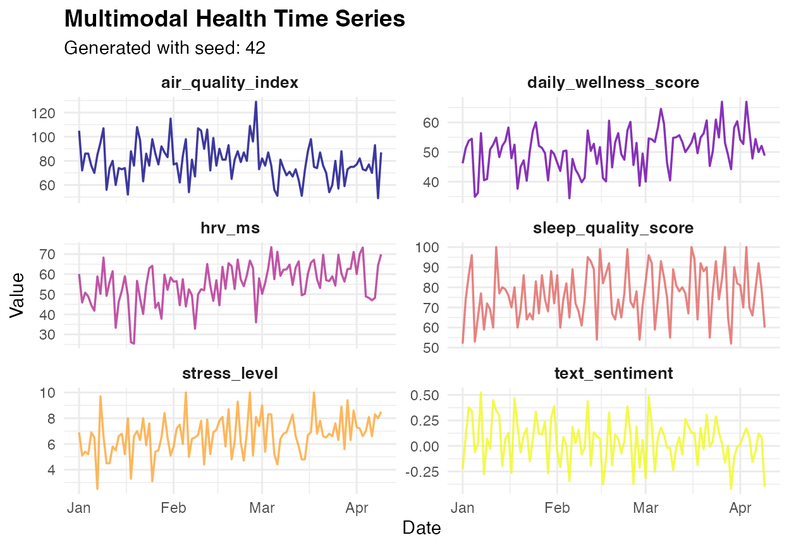

MultimodalHealthGenerator.Rmd
library(healthsimulation)## Loading required package: tidyverse## ── Attaching core tidyverse packages ──────────────────────── tidyverse 2.0.0 ──
## ✔ dplyr 1.1.4 ✔ readr 2.1.5
## ✔ forcats 1.0.0 ✔ stringr 1.5.1
## ✔ ggplot2 3.5.2 ✔ tibble 3.3.0
## ✔ lubridate 1.9.4 ✔ tidyr 1.3.1
## ✔ purrr 1.0.4
## ── Conflicts ────────────────────────────────────────── tidyverse_conflicts() ──
## ✖ dplyr::filter() masks stats::filter()
## ✖ dplyr::lag() masks stats::lag()
## ℹ Use the conflicted package (<http://conflicted.r-lib.org/>) to force all conflicts to become errors
## Loading required package: R6
##
## Loading required package: corrplot
##
## corrplot 0.92 loaded
##
## Loading required package: viridis
##
## Loading required package: viridisLite
##
## Loading required package: ggwordcloud
# Example usage and demonstration
cat("=== MULTIMODAL HEALTH TIME SERIES GENERATOR R6 CLASS ===\n\n")## === MULTIMODAL HEALTH TIME SERIES GENERATOR R6 CLASS ===
cat("Creating generator instance...\n")## Creating generator instance...
# Create generator with seed
generator <- MultimodalHealthGenerator$new(seed = 42)## MultimodalHealthGenerator initialized with seed: 42
# Generate data
health_data <- generator$generate(n_days = 100, start_date = "2024-01-01")## Generating 100 days of multimodal health data starting from 2024-01-01
## ✓ Generated dataset with dimensions: 100 × 19
# Display sample
cat("\nFirst 5 rows of generated data:\n")##
## First 5 rows of generated data:## date day_of_year day_of_week is_weekend month season hrv_ms
## 1 2024-01-01 1 1 FALSE 1 winter 60.1
## 2 2024-01-02 2 2 FALSE 1 winter 45.9
## 3 2024-01-03 3 3 FALSE 1 winter 50.8
## 4 2024-01-04 4 4 FALSE 1 winter 48.9
## 5 2024-01-05 5 5 FALSE 1 winter 44.6
## resting_hr_bpm sleep_quality_score daily_steps air_quality_index
## 1 75 52 9057 105
## 2 79 74 10590 72
## 3 69 86 8426 86
## 4 81 96 7735 86
## 5 72 53 5330 76
## indoor_temp_c humidity_percent light_exposure_lux_hrs stress_level
## 1 20.5 41 486 6.9
## 2 21.8 41 342 5.1
## 3 23.0 37 378 5.4
## 4 22.7 33 330 5.2
## 5 19.7 25 220 6.9
## text_sentiment text_complexity_words health_keywords_count
## 1 -0.224 25.0 3
## 2 0.091 18.6 7
## 3 0.377 22.7 3
## 4 0.346 21.6 3
## 5 -0.061 25.0 2
## daily_wellness_score
## 1 46.2
## 2 51.3
## 3 53.8
## 4 54.5
## 5 34.9
# Get summary statistics
cat("\nSummary statistics:\n")##
## Summary statistics:
summary_stats <- generator$get_summary_stats()
print(summary_stats)## # A tibble: 14 × 5
## variable mean sd min max
## <chr> <dbl> <dbl> <dbl> <dbl>
## 1 month 2.18 0.98 1 4
## 2 hrv_ms 55.4 9.84 25.4 73.5
## 3 resting_hr_bpm 68.7 6.49 53 90
## 4 sleep_quality_score 76.7 12.8 52 100
## 5 daily_steps 7865. 1931. 3471 11506
## 6 air_quality_index 79.6 15.1 49 129
## 7 indoor_temp_c 21.3 1.67 18 25.4
## 8 humidity_percent 41.4 12.1 25 78
## 9 light_exposure_lux_hrs 356. 110. 100 614
## 10 stress_level 6.7 1.5 2.5 10
## 11 text_sentiment 0.05 0.21 -0.42 0.52
## 12 text_complexity_words 23.6 2.14 14.4 25
## 13 health_keywords_count 3.81 2.09 0 10
## 14 daily_wellness_score 50.6 6.87 34.4 67
# Get correlations with target
cat("\nTop correlations with wellness score:\n")##
## Top correlations with wellness score:## Variable Correlation
## sleep_quality_score sleep_quality_score 0.571
## text_sentiment text_sentiment 0.460
## hrv_ms hrv_ms 0.433
## stress_level stress_level -0.380
## daily_steps daily_steps 0.372
## light_exposure_lux_hrs light_exposure_lux_hrs 0.314
## month month 0.311
## air_quality_index air_quality_index -0.290
# Analyze interdependencies
cat("\nInterdependency analysis:\n")##
## Interdependency analysis:
interdep <- generator$analyze_interdependencies()
print(interdep$stress_effects)## # A tibble: 4 × 7
## stress_quartile avg_wellness avg_sleep avg_hrv avg_sentiment avg_keywords
## <int> <dbl> <dbl> <dbl> <dbl> <dbl>
## 1 1 53.6 79.6 52.8 0.251 3.4
## 2 2 51.8 79.9 55 0.091 3.8
## 3 3 50 73.6 56.4 0.016 3.5
## 4 4 47.1 73.7 57.5 -0.163 4.5
## # ℹ 1 more variable: stress_level_category <chr>
cat("\n=== GENERATOR FEATURES ===\n")##
## === GENERATOR FEATURES ===
cat("✓ R6 class with clean OOP interface\n")## ✓ R6 class with clean OOP interface
cat("✓ Seed-based reproducible generation\n")## ✓ Seed-based reproducible generation
cat("✓ Comprehensive documentation\n")## ✓ Comprehensive documentation
cat("✓ Built-in analysis methods\n")## ✓ Built-in analysis methods
cat("✓ Visualization capabilities\n")## ✓ Visualization capabilities
cat("✓ Data export functionality\n")## ✓ Data export functionality
cat("✓ Modular generation pipeline\n")## ✓ Modular generation pipeline
cat("✓ Parameter validation\n")## ✓ Parameter validation
cat("✓ Metadata tracking\n")## ✓ Metadata tracking
generator$plot_time_series()